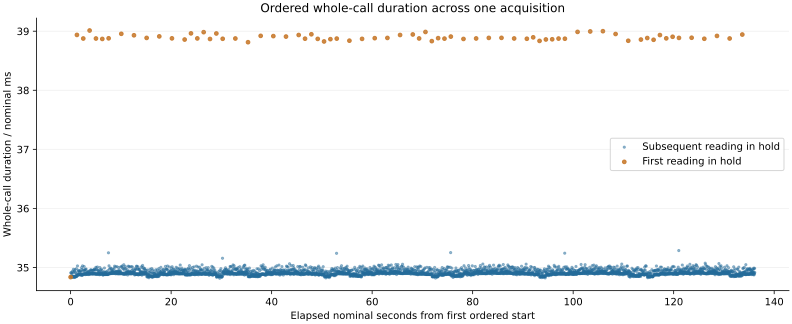

Question and rationale
Can native ordered counter observations provide complete, internally consistent intervals for six-state acquisition and recognition, while retaining every original recognition outcome?
The preceding separation-based comparison recognized 864/864 and 863/864 candidate medians in two boots. The second return retained one state-1 rejection: raw codes 2881, 2850 and 2880; median 2880; candidate interval 2837..2870; next interval beginning at 2887. Its neighbours returned inside the state-1 interval. This motivates retaining explicit timing and examining the spacing of exceptions and subsequent decisions. It does not establish the cause or continuous physical duration of the excursion.
Earth rotation angle is the proposed astronomical reference for Seigr time. This run develops the local measuring relation required before such anchoring. No current ERA, UTC epoch, independent oscillator calibration or numerical accuracy bound is supplied or inferred.
Method
Use the established single-boot 30-minute workflow. Preserve all returned records before preparing another acquisition. The two preceding captures remain separate observations.
Retain six rounds, six reference holds of 36 readings and six validation holds of 72 readings per round: 3888 raw readings and 864 non-overlapping validation medians. Reference order, voltage request interval, trigger mode, 1 ms programmed settling, operating guards, cleanup and restoration are unchanged. The baseline and one-third-gap recognition rules use the same acquired values. Validation cannot update calibration, and requested validation identities cannot enter recognition.
Wrap each existing supervised sample/calibration/recognition call with ordered CNTPCT readings. Each read uses an ISB before and after it. Record start and end counters, their reported CNTFRQ values, interval status and exact elapsed ticks. Retain the wrapped electrical return status separately. No retry, extra ADC request, broadened acceptance interval or suppressed failure is introduced.
The bracket covers the entire delegated call, including any calibration or recognition in that call. Existing interior counters remain available but are not promoted to independently ordered measurements. Fractional durations use exact numerator/denominator arithmetic with senary digit extraction; reported nominal seconds depend on CNTFRQ configuration.
Assessment
Require a complete authenticated run identity, intact boot payload, recovered journal, 3888 attempted rows, all prescribed cleanup and restoration, and unchanged reconstruction of all native baseline and candidate decisions. Assess recognition separately: record correct, wrong, unresolved and unavailable outcomes; retain the preceding complete-recognition criterion without alteration.
The timing criterion requires 3888 valid endpoint intervals, no missing/changed/out-of-range frequency, no backward endpoint or inter-row discontinuity, and positive observed progress through each call. Both endpoint frequencies must match the entry configuration. Reconstruct native elapsed ticks exactly and verify that retained interior sample counters lie within their ordered bracket. A changed counter or inconsistent interval cannot be converted into a valid duration.
For each completed median, report the ordered span from the first call's start to the third call's end. For each wrong, unresolved or unavailable decision, retain its raw triple and the next decision within the same held request when present. Report their measured spacing without claiming the signal was continuously observed between acquisitions. Do not choose a later acceptance threshold from these results and describe it as a prospective test.
Report instrumentation overhead as an apparatus difference. All 31 preceding instruction regions retain their bytes and addresses; two new regions supply time and the acquisition wrapper. Timing records shift comparison data addresses and increase journal demand from 29818 to at most 32151 sectors within the 32704 reserved sectors. A difference in recognition between boots cannot by itself be attributed to the timing addition.
Recording and implementation
Configuration schema 10. Section 3: 384 baseline calibration words, 23328 timing words (six per row), then 48672 comparison words. Before the first complete reference phase, only the calibration prefix and attempted timing records are streamed. Subsequently all 72384 words are streamed; unattempted slots must remain zero. The remaining journal sections preserve their established identities.
Target execution follows literal SEIGRASM entry, timed acquisition, native PMIC transactions, calibration/recognition and native raw-sector SD recording. The PC tool copies literal opcode words, initializes contexts and packages the boot image. It does not generate the target instructions. Supplied-device execution tests use Unicorn on the PC. The existing EEPROM loading dependency remains; there is no new firmware service request.
Sources: time.aarch64.seigrasm and timed.aarch64.seigrasm. The independent reader, preparation tool and capture tool accompany the archived hashes and exact source snapshots.
Second boot
Candidate B320A87AE11B repeated the first timing run with all 33 instruction regions, acquisition settings and assessment criteria unchanged. A fresh identity and empty journal separated its observations from boot 1. The repeat tested whether complete timing records and six-state recognition recur across boots, comparing whole-call duration distributions, first readings within each hold, median-decision spans and recognition exceptions. Between-boot differences do not by themselves identify a cause. Repeat verification; preparation manifest; returned results.
Boot 1 results
Candidate CFC379461198 completed all 3888 observations and 864 three-reading median decisions. All 3888 ordered intervals satisfy the declared timing criterion: native elapsed ticks match their endpoints, every interval is positive, the retained interior counters lie within their brackets, and no backward interval or inter-row discontinuity was recorded. All 7776 endpoint frequency readings agree with the entry configuration of 54000000 Hz.
The separation rule recognized 864/864 medians, with no wrong, unresolved or unavailable decisions. Each of the six rounds contributed 144 correct decisions. The narrower renewed baseline recognized 862/864, with two unresolved decisions and no wrong assignments. Both unresolved baseline decisions became correct assignments under the separation rule. All six candidate calibrations succeeded; the minimum rejection gap contained 13 unassigned integer ADC codes.
| Recorded group | Count | Minimum / ms | Median / ms | Maximum / ms |
|---|---|---|---|---|
| All acquisition calls | 3888 | 34.818 | 34.902 | 39.012 |
| First call in each held-state block | 72 | 34.837 | 38.879 | 39.012 |
| Subsequent calls in a held-state block | 3816 | 34.818 | 34.901 | 35.287 |
| Three-call median-decision spans | 864 | 104.632 | 104.831 | 108.922 |

The first ordered start to the last ordered end spans 136.177062 nominal seconds. Summed call durations account for 136.028746 seconds; the remaining 0.148316 seconds are gaps between brackets. Consecutive brackets are separated by 0.026685–6.250259 ms. The existing acquisition-report counter pair spans 136.185539 seconds, including operations outside the individual brackets. The existing trial-entry to final-section-start pair spans 1402.098862 seconds; this is distinct from the ordered acquisition span and precedes the final section's own write/readback.
| Round / state | Raw triple | Median | Baseline interval | Separation interval |
|---|---|---|---|---|
| 1 / 1 | 2851, 2880, 2856 | 2856 | 2847–2854 | 2832–2869 |
| 2 / 1 | 2848, 2864, 2865 | 2864 | 2845–2858 | 2830–2872 |
Boot 2 results
Candidate B320A87AE11B completed all 3888 observations, with 3888 valid ordered intervals, no timing discontinuities and all 7776 endpoint frequency readings equal to the entry value of 54000000 Hz. The candidate recognized 863/864 medians: one unresolved, none wrong or unavailable. The renewed baseline recognized 860/864, with four unresolved and none wrong or unavailable. Three baseline rejections became correct candidate assignments. All six candidate calibrations succeeded; the minimum rejection gap contained 11 unassigned integer ADC codes.
| Recorded group | Count per boot | Boot 1 median / ms | Boot 2 median / ms |
|---|---|---|---|
| All acquisition calls | 3888 | 34.902 | 34.909 |
| First call in each held-state block | 72 | 38.879 | 38.886 |
| Subsequent calls in a held-state block | 3816 | 34.901 | 34.908 |
| Three-call median-decision spans | 864 | 104.831 | 104.856 |
The first ordered start to the last ordered end spans 136.205290 nominal seconds: 136.051422 seconds inside calls and 0.153868 seconds between brackets. The existing acquisition-report pair spans 136.213763 seconds; the trial-entry to final-section-start pair spans 1402.166795 seconds. The latter includes acquisition and precedes the final section's own write/readback.
| Reading positions | Raw triple | Median | Candidate result |
|---|---|---|---|
| 46–48 | 2850, 2850, 2851 | 2850 | Correct |
| 49–51 | 2880, 2847, 2880 | 2880 | Unresolved |
| 52–54 | 2851, 2855, 2852 | 2852 | Correct |
The state-1 candidate interval was 2830–2869; the next state's interval began at 2886. Median 2880 therefore remained in the rejection gap. The request and its register readback remained at code 93 across these nine readings. The rejected triple's individual call durations were 34.919500, 34.893315 and 34.921074 nominal ms, within this boot's range for subsequent readings in a hold. Its ordered three-call span was 5659471 ticks (104.805019 nominal ms). The following correct triple ended 5665353 ticks (104.913944 nominal ms) after the rejected triple's ordered end. This measures spacing between recorded endpoints, not a continuous excursion duration or independently measured conversion time.
Interpretation and comparison
Both boots recovered all 3888 internally consistent ordered intervals. Candidate median recognition was complete in boot 1 and retained one unresolved decision in boot 2. The timing criterion recurred; complete recognition did not. The ordered intervals provide a measured basis for investigating hold transitions and operation pacing. They do not demonstrate improved oscillator accuracy, an ERA reference or a causal improvement in recognition.
| Return | Baseline correct / 864 | Separation rule correct / 864 | Candidate unresolved |
|---|---|---|---|
| Separation comparison, boot 1 | 854 | 864 | 0 |
| Separation comparison, boot 2 | 859 | 863 | 1 |
| Ordered timing, boot 1 | 862 | 864 | 0 |
| Ordered timing, boot 2 | 860 | 863 | 1 |
No wrong candidate median assignments occurred in these four returns. The two timing boots share their instruction bytes and settings; the preceding separation comparison used fewer instructions and records. These observations cannot isolate an effect of timing instrumentation on recognition.
Boot 2 exercises ordered timing of an unresolved median and the next correct decision within the same hold. Two of the rejected triple's readings were outside the state-1 interval, so the median retained the excursion. The intervening in-band reading prevents interpreting this triple as one continuously observed departure. This local pattern and the unchanged request motivate investigating result acquisition and spacing before revising the acceptance rule. Additional ordered brackets around request, status and result transactions could distinguish their contributions to call duration; controlled spacing could test whether the observed pattern depends on acquisition cadence. The acquisition-spacing experiment specifies these measurements. Its first return recognized 288/288 candidate medians at each added wait, with complete ordered observations and no recognition advantage from longer spacing. The cause of this earlier exception remains unestablished.
Boot 1 acquisition and integrity
Two read-only acquisitions of the 64 MiB experimental region agree byte-for-byte by SHA-256: 6957093dd04a217b23765d3699d99ad90e4e7ddb0f48f500950cf2eec3ed7d98. Both boot files remain identical to the preparation image. The journal contains 32151 consecutive valid records and 553 unchanged empty reservations. All six restoration attempts completed, final restoration and pin release report success, and seven sectors outside the journal differ from the preparation image. Their changes are preserved in the boot-volume assessment; their writer and timing are not inferred.
The shared SD procedure applies. No deviations were reported; the external power duration was not separately measured. The recovered final section proves its recorded contents were persisted, but does not prove its subsequent target readback completed.
Boot 2 acquisition and integrity
Two read-only acquisitions agree by SHA-256: a5c29a14243330d0cca4df59914d87d99a82ef065af229d13aea31a385b8cd07. The prepared boot files are unchanged. All 32151 journal records are valid and consecutive, with 553 unchanged empty reservations. All six block restorations completed; final restoration and pin release report success. Seven sectors outside the journal differ from the prepared image; their writer and timing remain unidentified. The existing SD procedure applies; no deviations were reported. External powered and power-off durations were not separately measured.
Interpretation limits
Instruction ordering and exact arithmetic do not establish absolute clock accuracy. CNTFRQ is configuration evidence; endpoint agreement cannot rule out intervening changes or drift. The measuring counter's physical increment and oscillator uncertainty are uncalibrated. ERA anchoring and migration between timing sources are not implemented. These runs do not independently establish ADC conversion freshness, analog voltage accuracy or the physical cause of an excursion. Other ISA timing implementations are not qualified by an AArch64 return.
Preparation
Candidate CFC379461198 passed 252 supplied-input checks. The prepared image adds ordered timing to the unchanged recognition path. Its boot payload was recovered unchanged. Boot 2 reused the same validation after verifying all 91 covered source hashes; all 33 instruction regions and acquisition settings were unchanged, and its boot payload was also recovered unchanged. Preparation manifest; validation record; instruction continuity.